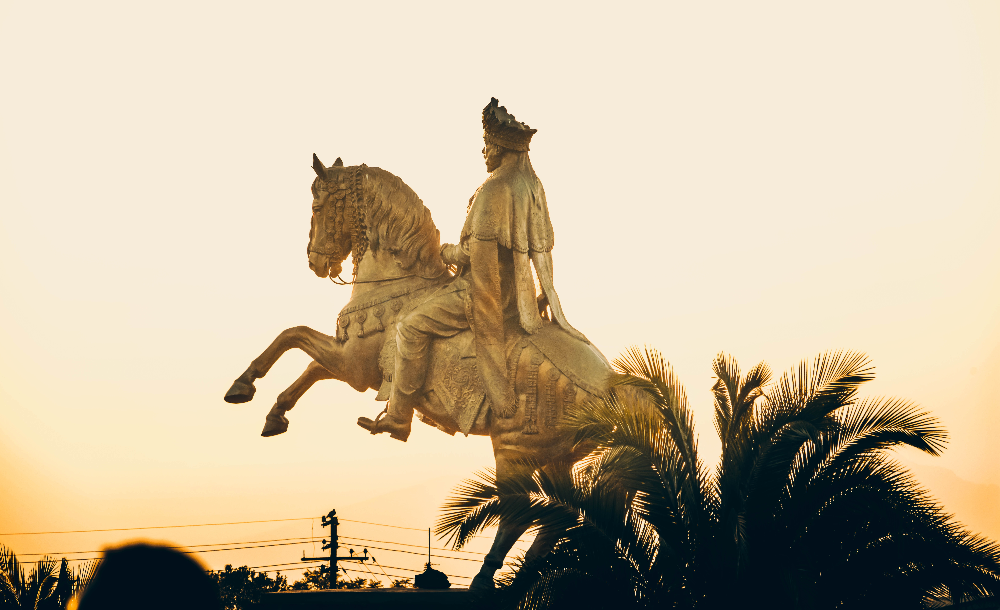

Who are the akan?

Akan culture is one of the traditional matrilineal cultures of Africa.[25] Akan art is wide-ranging and renowned, especially for the tradition of crafting bronze gold weights, using the lost-wax casting method. The Akan culture reached South America, the Caribbean, and North America.[26] Some of their most important mythological stories are called anansesem, literally meaning "the spider story", but in a figurative sense also meaning "traveler's tales". These "spider stories" are sometimes also referred to as nyankomsem: "words of a sky god". The stories generally, but not always, revolve around Kwaku Ananse, a trickster spirit, often depicted as a spider, human, or a combination thereof.
SearchAkan people are believed to have migrated to their current location from the Sahara desert and Sahel regions of Africa into the forest region around the 11th century. Many Akans tell their history as it started in the eastern region of Africa as this is where the ethnogenesis of the Akan as we know them today happened. Oral traditions of the ruling Abrade (Aduana) clan relate that Akans originated from ancient Ghana. They migrated from the north, they went through Egypt and settled in Nubia (Sudanese Nile). Around 500 AD (5th century), due to the pressure exerted on Nubia by the Axumite kingdom of Ethiopia, Nubia was shattered, and the Akan people moved west and established small trading kingdoms. These kingdoms grew, and around 750 AD the Ghana Empire was formed. The Empire lasted from 750 AD to 1200 AD and collapsed as a result of the introduction of Islam in the Western Sudan, and the zeal of the Muslims to impose their religion, their ancestors eventually left for Kong (i.e. present day Ivory Coast). From Kong they moved to Wam and then to Dormaa (both located in present-day Brong-Ahafo region). The movement from Kong was necessitated by the desire of the people to find suitable savannah conditions since they were not used to forest life. Around the 14th century, they moved from Dormaa South Eastwards to Twifo-Hemang, North West Cape Coast.
Their art
their skills.
the nature and environment they live